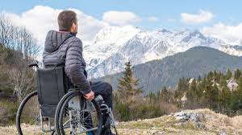
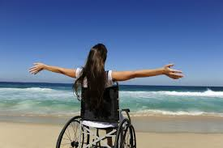
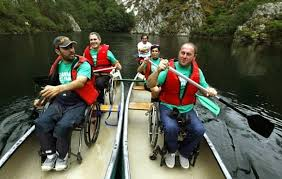
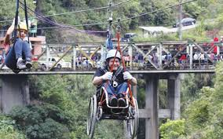
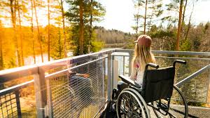
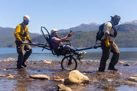
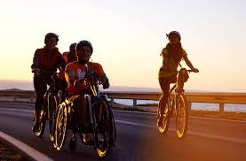

Es aquel que esta pensado para tener en cuenta a cualquier persona sin discriminar su condicion y adecuandose a sus necesidades se lo relaciona principalmente con garantizar la aptitud para discapacitados, el cual es un punto muy importante, pero no es el unico. En realidad abarca otras necesidades, porque entre otros aspectos, contempla la orientacion sexual de los viajeros e incluso comprende politicas pet friendly es un concepto que, para interpretarlo orrectamente, hay que pensarlo en terminos universales, ya que abarca a todas las personas Es insuficiente tener una atraccion turistica con accesibilidad optima, se requiere, y debe ser un estandar: el diseño universal y la infraestructura accesible de hoteles, medios de transporte, y/o servicios auxiliares.
|  |
La idea va mas alla de solo eliminar barreras arquitectonicas, sera, el nunca prescindir del concepto de accesibilidad universal y diseño universal en construcciones y servicios Se espera que las personas que atienden los servicios turisticos accesibles esten capacitadas y que haya una sensibilizacion sobre la importancia de la accesibilidad y el diseño universal. Se pretende tener un espacio que aporte seguridad y autonomia para todos sus usuarios.
El impacto mas notorio que tiene el turismo accesible pasa por la integracion de personas discapacitadas segun el Banco Mundial, aproximadamente mil millones de personas sufren alguna discapacidad, es decir, el 15% de la población mundial. El turismo accesible se adecua a las necesidades de estas personas, para que puedan vivir una experiencia de manera independiente. Los gobiernos y empresas que impulsan el turismo accesible ponen en marcha políticas para brindar un servicio en igualdad de oportunidades para todas las personas. usuarios.
|  |  |
|  |  |
|  |  |